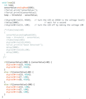
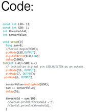

In my "Maker Workshop" class, I designed, programmed and built a sweat sensor. This device is meant to detect when a hand is sweaty and trigger both a light and a fan to turn on. I used a Grove GSR sensor to detect a person's degree of sweatiness by reading the conductivity levels of their fingers. The number output was then used to turn on/off the 5V Mini Fan and LED.
How it was programmed:


I used felt to fashion all of the pieces into a wearable bracelet, with flowers stitched into the outer casing. The sensor, fan, LED and coin cell battery holder were all wired to an Adafruit Gemma board with conductive thread.
The Circuit: